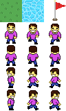

Last time we've covered obstacle collision detection. This time we'll add collectible flags to our game and use a different approach.
Since this time we are checking entity-to-entity collision instead of entity-to-tile, there are a few new challenges to solve. But only one reason is enough to use an approach that's different from what we used when dealing with obstacles - entities may not necessarily be snapped to a grid.
Probably the easiest collision detection, which fortunately works for this specific situation, is radial collision detection. In a nutshell, we have 2 points, and we detect collision when the distance between them becomes less than the specified radius.
This kind of collision detection works perfectly for round objects, but is also suitable for most "organic" entities in games. Also, not only is it easy to implement, it's also fast.
We will start by updating our tile set by adding a new flag:
Now go to the TileEntity class and update it by adding a new method collide().
package ;
/**
* Base class for drawable tile entities.
* @author Kirill Poletaev
*/
class TileEntity
{
public function draw():Array<Float> {
return [];
}
public function collide(object:TileEntity):Void {
}
}The function receives an object which it collides with. This way we can handle collisions with different entities in different ways.
Create a new Flag.hx class, which will represent the collectible flag. Extend it from TileEntity. Here's the code:
package ;
import openfl.geom.Point;
/**
* Collectible flag entity.
* @author Kirill Poletaev
*/
class Flag extends TileEntity
{
public var position:Point;
private var tileid:Int;
private var entities:Array<TileEntity>;
public var radius:Int;
public function new(gridX:Int, gridY:Int, tileSize:Int, tileid:Int, entities:Array<TileEntity>)
{
position = new Point(gridX * tileSize, gridY * tileSize);
this.tileid = tileid;
this.entities = entities;
radius = tileSize;
}
override public function draw():Array<Float> {
return [position.x, position.y, tileid];
}
override public function collide(object:TileEntity):Void {
if (Std.is(object, PlayerCharacter)) {
entities.remove(this);
}
}
}The Flag constructor receives a number of parameters - its coordinates on the grid, the tileSize property, ID of the tile from Tilesheet, and the entities array.
We can set the radius property to anything we want, but in this case I'll set it to tileSize.
The overridden collide() method checks if the collided object is of PlayerCharacter type. When that kind of collision is detected, the Flag removes itself from the entities array.
Now go back to the Main class and add a new piece of code to the ENTER_FRAME event handler, which handles radial collision between entities and the player.
We can use the distance() method of the Point class to easily calculate distance between 2 points. Call the collide() method of the entity if the entity is a Flag and the distance to the player is less than it's radius:
private function everyFrame(evt:Event):Void {
var move:Point = new Point();
// Character walking
if (keysHeld[38]) {
character.face(Up);
character.animate();
move.y -= character.movementSpeed;
} else if (keysHeld[39]) {
character.face(Right);
character.animate();
move.x += character.movementSpeed;
} else if (keysHeld[40]) {
character.face(Down);
character.animate();
move.y += character.movementSpeed;
} else if (keysHeld[37]) {
character.face(Left);
character.animate();
move.x -= character.movementSpeed;
}else {
character.resetAnim();
}
TileCollisionDetector.detect(map, character.position, move, tileSize);
// player-flag collisions
for (entity in entities) {
if (Std.is(entity, Flag)) {
var flag:Flag = cast(entity, Flag);
if (Point.distance(character.position, flag.position) <= flag.radius) {
flag.collide(character);
}
}
}
drawEntities();
}
All that's left is to spawn some flags. Go to the init() function and use this code after generating map data:
// Collectible flags
var flagTileId:Int = tilesheet.addTileRect(new Rectangle(64, 0, 32, 32));
entities.push(new Flag(10, 10, tileSize, flagTileId, entities));
entities.push(new Flag(2, 2, tileSize, flagTileId, entities));
entities.push(new Flag(4, 12, tileSize, flagTileId, entities));
entities.push(new Flag(22, 10, tileSize, flagTileId, entities));
entities.push(new Flag(20, 3, tileSize, flagTileId, entities));
Done! If you test the game now, you should be able to collect the flags by touching them.
This was a tutorial series on making a basic tile game in Haxe and OpenFL. If you're craving for more, take a look at the other tutorials on this site, and subscribe to the free newsletter for updates and some extra content!